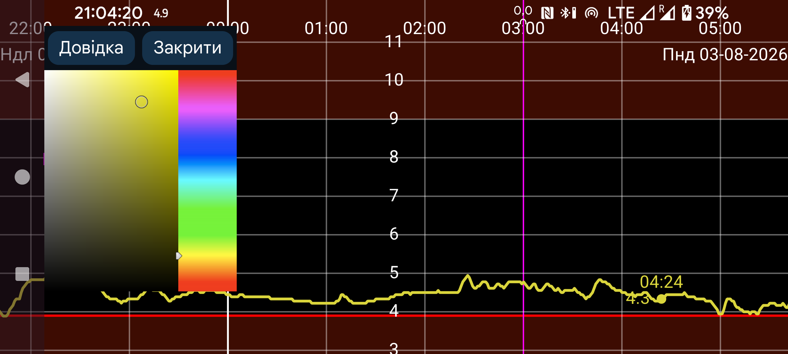

Тут можна змінювати кольори чисел, кривих і точок сканування. Торкніться точки кривої, сканування або значення, щоб показати відомості про неї, а потім виберіть колір у вікні кольорів. Крива, точка сканування або значення відображатиметься цим кольором.
У версії для Wear OS потрібен годинник із кнопкою «Назад»; жест повернення не працює.